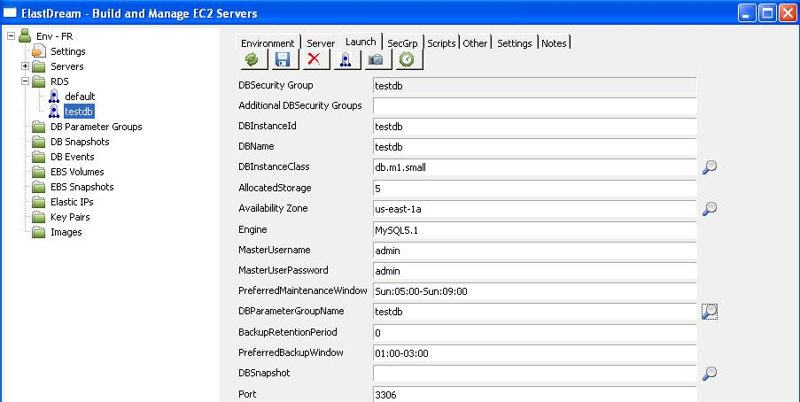
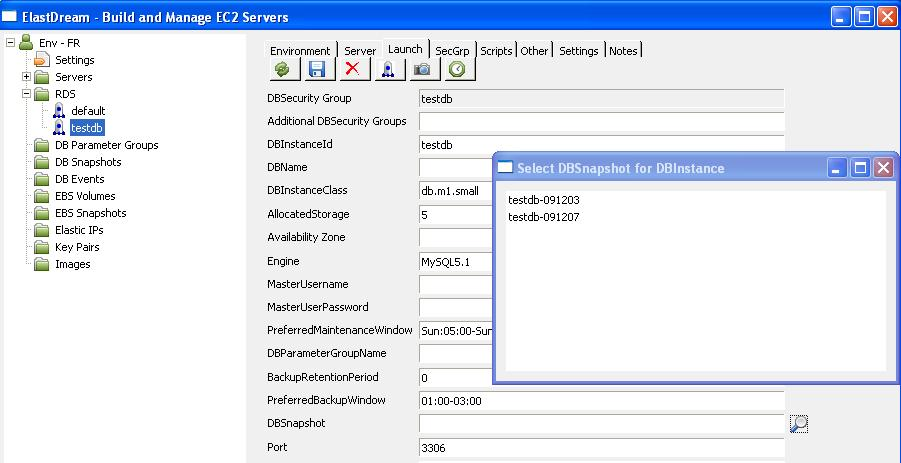
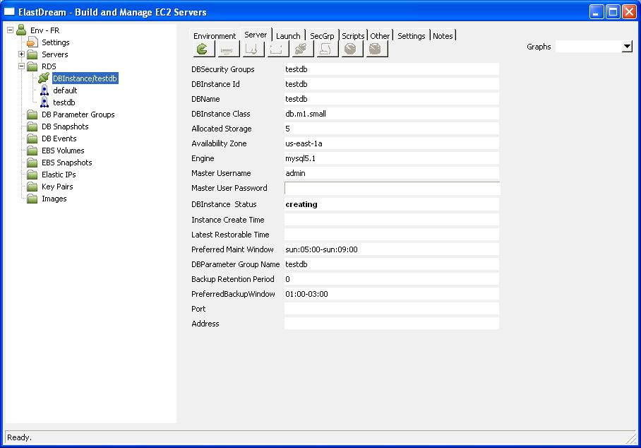
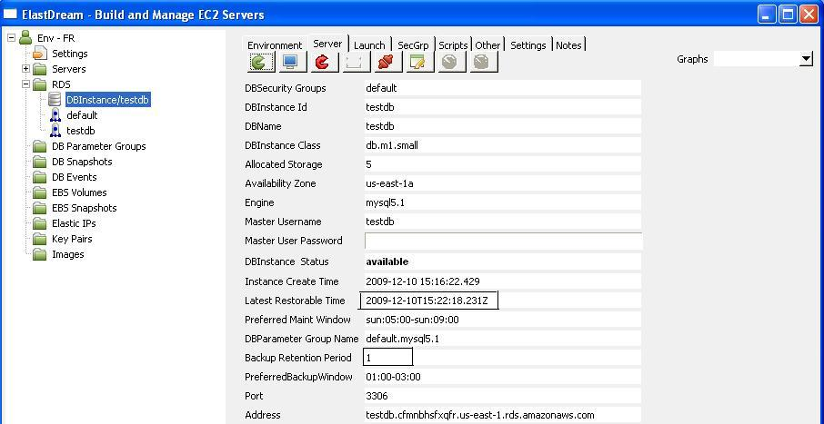
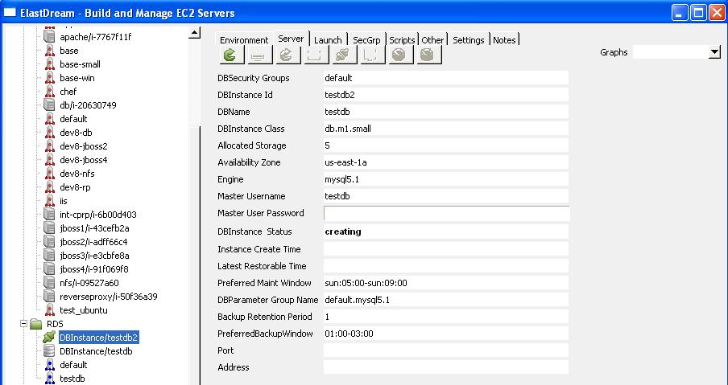

Restore DB Instance.
Core Concepts
DB Snapshots
DB Snapshots are backups of a DB Instance created by the user. Amazon RDS also supports automated backups which are retained for a user specified number of days.Restore DB Instance from Snapshot
1. Click on the testdb in the RDS tree view to bring up the launch parameters.
2. Select a DB Snapshots by pressing

3. To start the restore press the icon and the DB instance will be created from the snapshot.

4. When it is started the DBInbstance status will go to available.
Restore DB Instance to Point in Time
1. The DBinstance must be running and have Database Backups enabled.NOTE: Database backups can be enabled by modifying the DB Instance and setting the Backup Retention Period greater than zero.
Also the Lastest Restorable Time shows the lastest time that can be restored to.

2. In the launch tab for the database testdb select restore to point of time by pressing

3. Specify the target DB Instance ID and the Restore Time or set Use Lastest Restore Time to true.
Then press restore to start DBinstance
NOTE: Restore time is UTC time zone.

4. When it is started the DBInbstance status will go to available. When it is shut down the status goes to